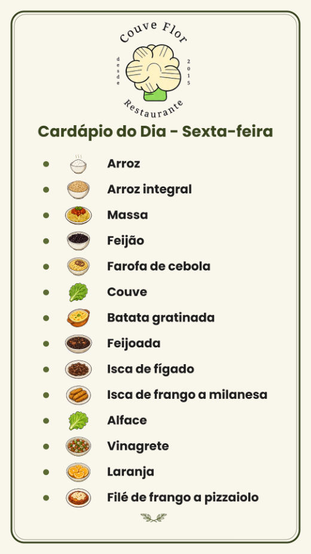
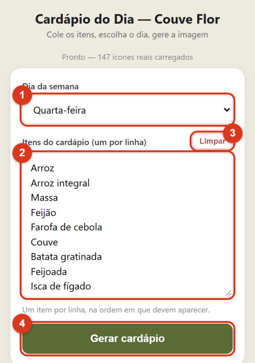
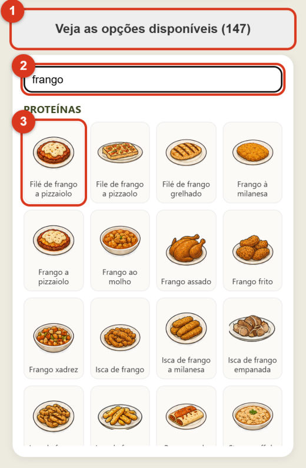
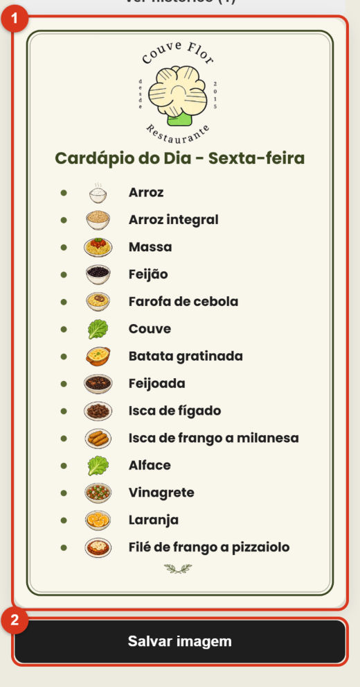
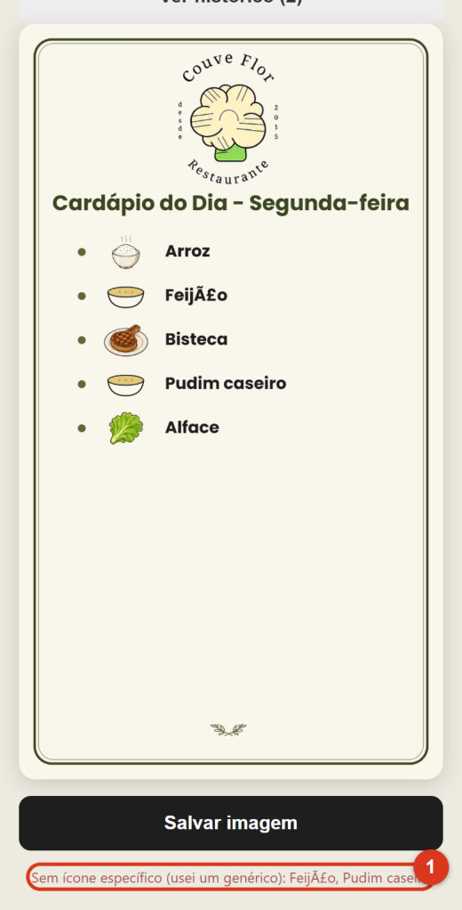
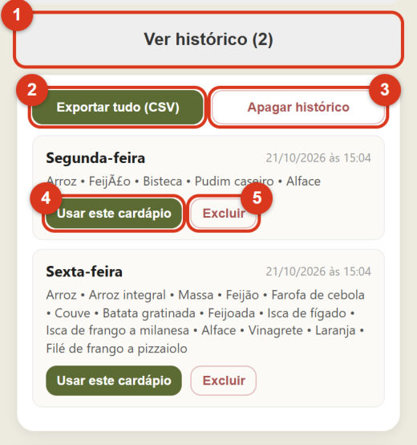

PORTA 07 · GERADOR DE CARDÁPIO
Da lista da cozinha ao Status do WhatsApp em um toque.
Todo dia, duas vezes por dia, o cardápio virava arte para as redes. Agora a equipe cola a lista de pratos e o app desenha a imagem no próprio celular. Experimente: monte o cardápio e gere.
A ordem digitada é a ordem na imagem. Tente um prato fora da lista, como "Pudim caseiro".
Veja as opções disponíveis (0)
O APP DE VERDADE
Cinco passos, dois minutos.
Prints do guia do operador.

1 O resultado: story 9:16 
2 Dia + lista de pratos 
3 Galeria com busca 
4 Gera e salva na galeria 
5 Prato desconhecido avisa 
6 Histórico e CSV
FICHA TÉCNICA
Gerador de cardápio Couve Flor
- Problema
- O cardápio do dia precisa ir para o WhatsApp e as redes cerca de duas vezes por dia, e montar a arte à mão toma tempo de quem está na cozinha.
- Solução
- Escolhe o dia, cola a lista (até do próprio WhatsApp) e o app desenha a imagem 1080 × 1920 com um ícone para cada prato. Salvar abre o compartilhar do celular: galeria ou direto no WhatsApp.
- Como reconhece
- Pelo texto: ignora maiúsculas e acentos, e o nome mais longo ganha ("bolinho de arroz" vence "arroz"). Prato desconhecido recebe uma tigela genérica e um aviso, para nada sair errado sem querer.
- Histórico
- Cada geração fica guardada no aparelho (dia, data, itens), sem duplicar a última. Dá para reusar um cardápio antigo ou exportar tudo em CSV.
- Sem servidor
- Tudo é desenhado no próprio celular: sem login, sem upload, funciona com internet fraca.
- Stack
- HTML · CSS · JavaScript puros · Canvas 2D · Web Share API · localStorage · CSV · GitHub Pages